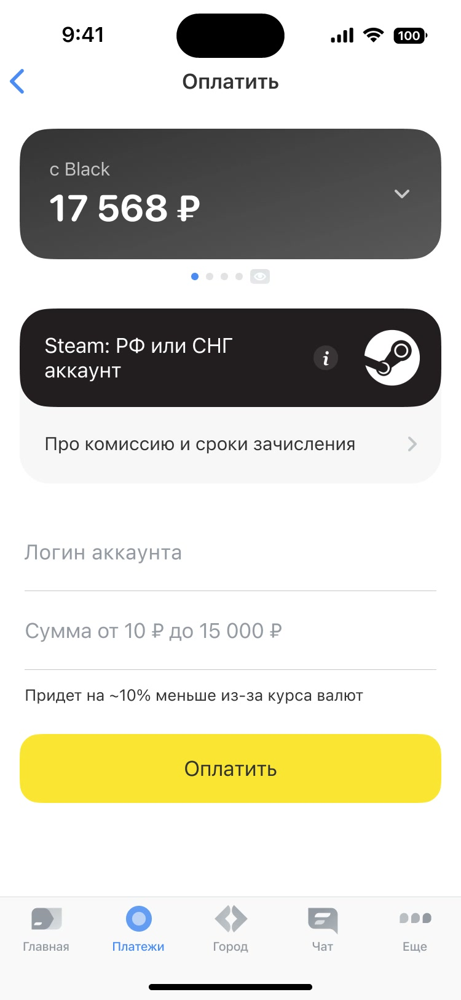
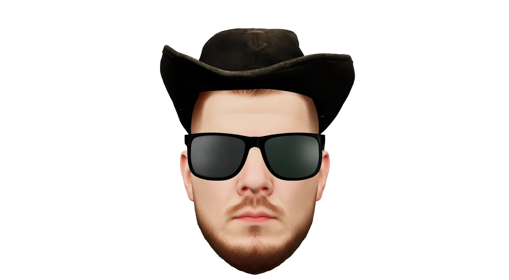

Как помочь пользователю найти нужный логин и не перепутать его с никнеймом при пополнении Steam.
Мой вклад
Бенчмаркинг, гипотезы, иллюстрация и финальный сценарий для iOS и Android.



Загружается 3D-портретПродуктовый дизайнер с 3+ годами опыта в EdTech и финтехе
Как помочь пользователю найти нужный логин и не перепутать его с никнеймом при пополнении Steam.
Бенчмаркинг, гипотезы, иллюстрация и финальный сценарий для iOS и Android.

Как помочь пользователю быстрее пополнить игровой баланс и не рассчитывать сумму с учётом конвертации вручную.
Бенчмаркинг, проверка гипотез и финальный сценарий для A/B-теста.
Личный AI-помощник для управления деньгами, которого я создал для себя.
Записываю расходы в Telegram-бота, а в мини-аппе слежу за бюджетом, конвертами и целями. Миса помогает замечать привычки в тратах и принимать более осознанные решения.
Концепт интерфейса электронного кальяна.
Эксперимент с UI и анимацией в After Effects. Здесь я сосредоточился на визуальном стиле и движении без продуктовой проработки.
Бесплатный AI-таролог, который начинался по фану для коллег, а в итоге стал работающим продуктом.
Прошёл весь путь от идеи и дизайна до разработки, запуска на своём домене и подключения аналитики.
Пришёл первым штатным дизайнером в образовательный продукт для фармацевтов, который до этого пять лет развивали подрядчики. Вместе с продактом выстроил процесс работы с внешней командой разработки: от постановки задач до проверки готовых интерфейсов. Провёл глубинные интервью с пользователями.
Проектирую экраны для новых функций и дорабатываю существующие.
Проектно работал над приложениями и сайтами для B2C и B2B. Получал задачи от ведущего дизайнера: делал отдельные экраны и интерфейсную анимацию.
Под его наставничеством прокачал UI и работу в After Effects.
Работал в команде «Платежи и переводы» над категориями «Мобильная связь» и «Игры» — в веб-версии банка и мобильном приложении.
Прошёл весь дизайн-процесс от понимания задачи до дизайн-ревью. Работал вместе с продактом, аналитиком, разработчиками и центром исследований: изучал данные, искал решения и проверял гипотезы на пользователях.